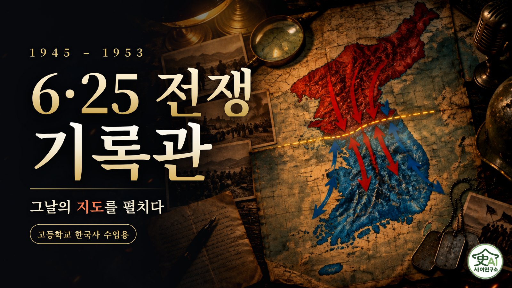

교실 · 교사 진행
수업용
- 학예사 목소리 없이 선생님이 설명하며 넘깁니다.
- → · PageDown(발표용 리모컨)으로 진행, H로 설명자료.
- 공용 PC에 기록을 남기지 않아요.

지도 위에서 광복부터 정전까지 8년을 따라가며 전선의 움직임과 사람들의 이야기를 기록하는 고등학교 한국사 수업용 게임입니다. 동아출판 『한국사』 72~73·88~91쪽을 바탕으로 만들었고, 한 번 끝까지 하는 데 약 30분 걸립니다.
게임 내용은 모두 같아요. 누가 설명하느냐와 기록을 남기느냐가 다릅니다.
각 장은 지도 연출, 인물 장면, 교과서 자료, 기록 과제로 이루어져 있어요.
다음 장면. 발표용 리모컨의 넘김 단추로도 됩니다.
설명자료 열고 닫기. 그 장면의 설명·발문·더 알아보기가 들어 있어요.
전체 화면. 화면 위쪽 단추를 누르세요.
모은 교과서 자료와 연표, 지도 자유 탐색을 다시 봅니다.
교과서 — 사진과 지도는 동아출판 고등학교 『한국사』에서 수업용으로 가져왔고, 저작권은 원저작자에게 있습니다.
지도 — 해안선·지형은 Natural Earth 공공 자료이고, 전선은 교과서 지도를 따른 개략도입니다.
인물 — 인물 그림과 재구성 대사의 목소리는 AI로 만든 상상입니다. 「실제 육성」 표시가 있는 목소리만 당시 녹음입니다.